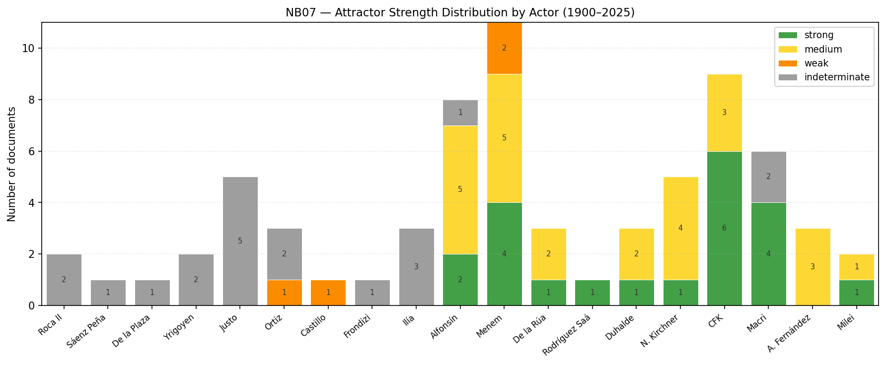
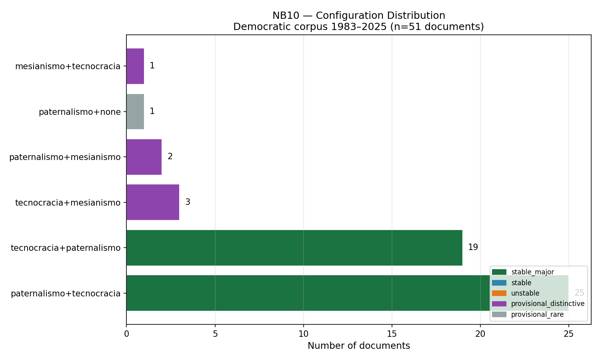
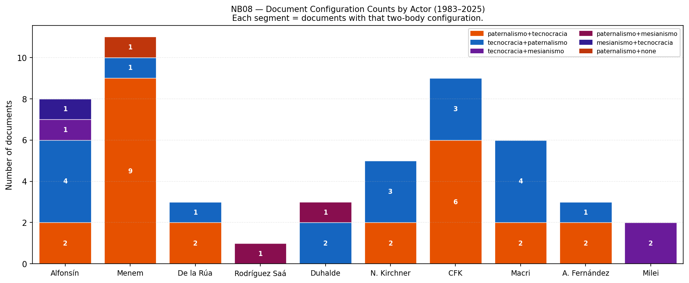
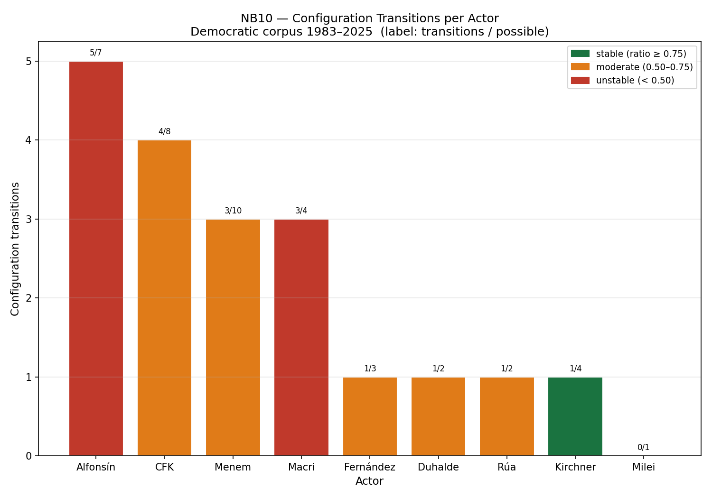
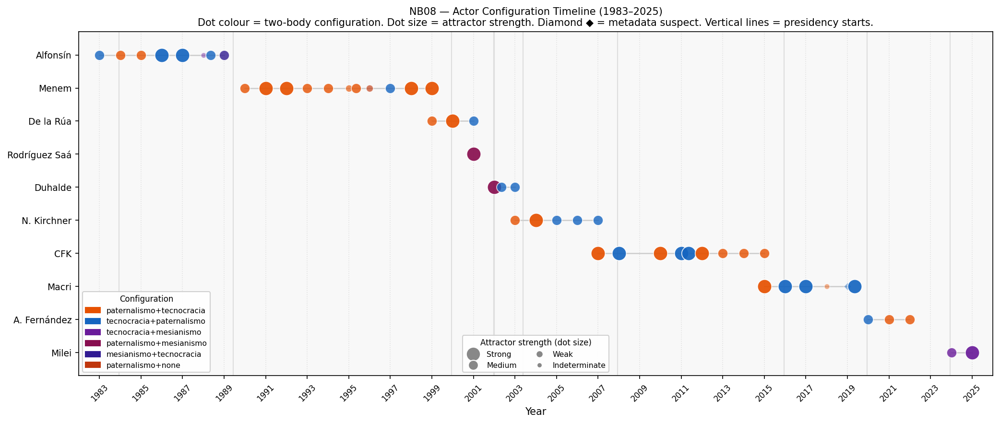

Figuras
Galería de figuras empíricas extraídas del corpus HCDN.
Corpus democrático

Perfiles de actor
Configuraciones


Transiciones


Perón
No existen figuras promovidas de la PERON_ALT_PIPELINE en v0.1. El análisis de Perón 1946 y 1954 está documentado en PERON_INTERIM_MEMO_1946_1954_v0_1.md como memo de texto. El caso de 1973 permanece bloqueado (BLQ-02c). Las visualizaciones de Perón no están en el alcance de v0.1.
No hay figura disponible. El análisis de Perón usa la PERON_ALT_PIPELINE con extracción manual y registro de patrones adaptado al período histórico. Los resultados son conteos cualitativos de patrones proposicionales, no scores calibrados. No son comparables numéricamente con las figuras del corpus HCDN.
No prueba: No existe puente numérico entre la pipeline Perón y el corpus HCDN. Cualquier figura futura de Perón requerirá bridge note metodológica antes de ser presentada junto con figuras HCDN.
Sin figuras promovidas de Perón en v0.1. Ver PERON_INTERIM_MEMO_1946_1954_v0_1.md para el análisis en formato de memo.
Rutas de figuras:
empirical/corpus_presidencial_hcdn/figures_promoted/